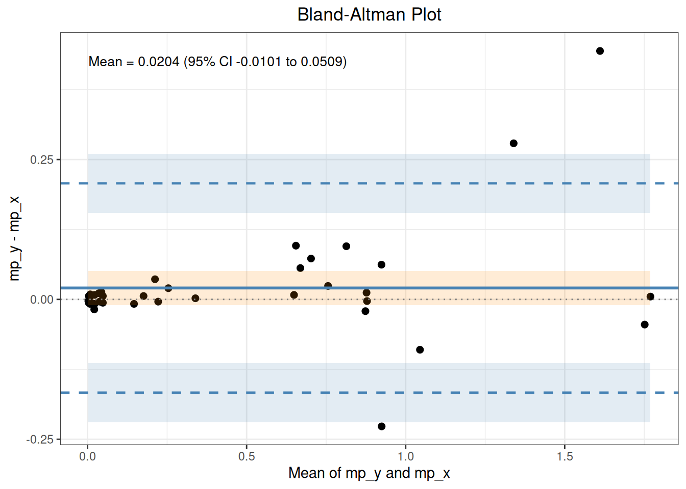
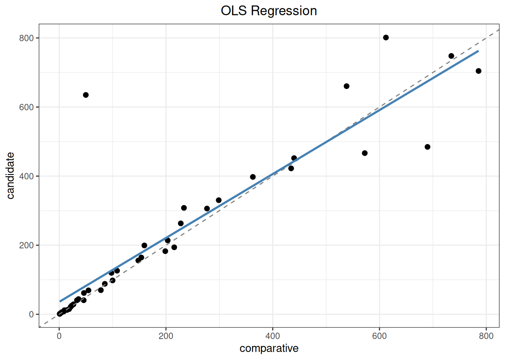
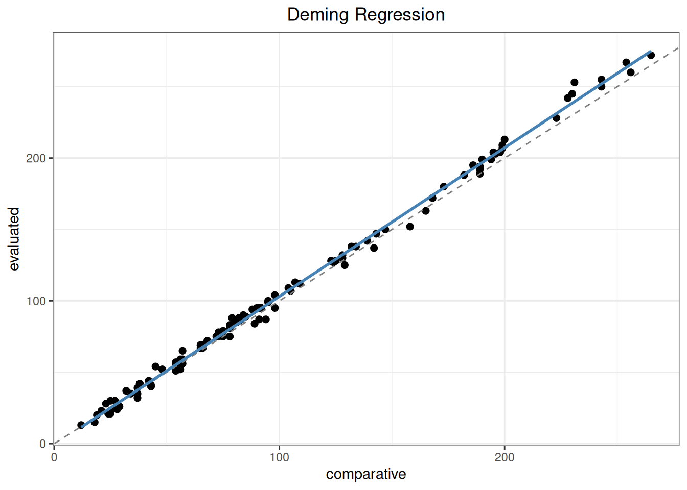

%%{init: {"theme":"base","themeVariables":{"primaryColor":"#EAF2FB","primaryBorderColor":"#2780E3","primaryTextColor":"#212529","lineColor":"#6C757D","secondaryColor":"#EAF7E6","tertiaryColor":"#FFF4E8","fontSize":"13px"},"flowchart":{"nodeSpacing":18,"rankSpacing":24,"padding":6}}}%%
flowchart LR
A["逐样本配对结果"] --> B{"是否存在<br/>重复测量？"}
B -->|是| C["replicate_to_mean()<br/>汇总为每样本一行"]
B -->|否| D["保留原数据"]
C --> E{"是否预设<br/>分析分段？"}
D --> E
E -->|是| F["split_by_cutpoints()<br/>拆分原数据"]
E -->|否| G["mcr()"]
F --> G
G --> H["describe() / correlation()<br/>outlier()"]
H --> I["regression() / bland_altman()"]
I --> J["bias() / plot() / summary()"]
classDef input fill:#EAF2FB,stroke:#2780E3,color:#212529
classDef process fill:#EAF7E6,stroke:#3FB618,color:#212529
classDef decision fill:#FFF4E8,stroke:#FF7518,color:#212529
classDef output fill:#F4EEFB,stroke:#9954BB,color:#212529
class A input
class B,E decision
class C,D,F,G,H,I process
class J output
9 方法学比较与参考物偏倚
本文演示如何使用 ivdtools 包分析方法学比较和参考物质偏倚。方法学比较使用同一批患者样本评价两个测量程序之间的关系，参考物质偏倚则比较重复测量均值与参考物质赋值。两条路径的研究对象、统计模型和结论不同，但都必须先规定比较方向和可接受偏倚限。
| 分析路径 | 主要输入 | 主要结果 |
|---|---|---|
| 患者样本方法学比较 | 样本编号、比较程序结果、待评价程序结果及可选权重 | 差值、回归参数、一致性限、离群点和指定水平处偏倚 |
| 参考物质偏倚 | 重复测量结果、参考物质赋值及其不确定度 | 均值、偏倚、相对偏倚和偏倚区间 |
重要使用边界
函数只计算统计结果，不依据相关系数、参数置信区间或一致性限自动宣布两个程序等效。回归模型、医学决定水平、允许偏倚、离群点处理和参考物质适用性均应在分析前规定。标准案例中的接受限只属于原案例。
mcr() 只接受每份样本一行的均值数据，不在内部聚合原始重复行。两种程序都有重复结果时，应先用 replicate_to_mean(data, "样本列", c("candidate", "reference")) 生成均值、SD 和 n，或由用户提前完成同等汇总。
代码
library(ivdtools)
library(readr)9.1 主要函数
9.1.1 分析流程：
| 函数 | 用途 | 返回值 |
|---|---|---|
replicate_to_mean() |
将一个或多个响应列按样本汇总为均值、SD 和 n | 汇总数据框 |
split_by_cutpoints() |
按预设数值界值拆分分析数据 | 具名 dataframe list |
mcr() |
建立方法学比较对象 | mcr 对象 |
describe() |
添加描述统计 | 更新后的 mcr 对象 |
correlation() |
添加相关分析 | 更新后的 mcr 对象 |
regression() |
拟合 OLS、WLS、Deming、加权 Deming 或 Passing–Bablok 回归 | 更新后的 mcr 对象 |
bland_altman() |
估计中心差异、中心区间和一致性限 | 更新后的 mcr 对象 |
outlier() |
检验差值离群点 | 更新后的 mcr 对象 |
bias() |
计算指定水平处偏倚 | 更新后的 mcr 对象 |
predict() |
进行正向或逆向预测 | 预测数据框 |
reference_bias() |
分析参考物质偏倚及区间 | reference_bias 对象 |
plot() |
绘制散点、回归、一致性或偏倚图 | ggplot 对象 |
summary() |
汇总已经完成的分析 | 原 mcr 对象（不可见） |
9.1.2 重复测量汇总 replicate_to_mean()
代码
replicate_to_mean(data, x, y, weights = NULL, na.rm = TRUE)
# 同时汇总两个方法，结果可直接交给 mcr()
summary_data <- replicate_to_mean(
raw_data, "sample", c("candidate", "reference")
)x 是样本编号列，y 可为一个或多个数值结果列。单列调用继续返回 x、y_mean、y_sd、y_n，保持原接口；多列调用返回 <变量>_mean、<变量>_sd、<变量>_n。多列模式不生成单一权重，因为两个方法各有自己的精密度信息。
9.1.3 按预设界值拆分数据 split_by_cutpoints()
分段属于分析前的数据准备，不保存在 mcr 对象中。一个 mcr 对象始终对应一个确定的数据集，因而描述统计、相关、离群点、回归、Bland–Altman、偏倚和图形使用相同的样本范围。
代码
mcr_data_list <- split_by_cutpoints(
method_data,
variable = "reference",
cutpoints = c(100, 500)
)
mcr_data_list控制台输出保持数据拆分摘要的形式：
Data split by cutpoints
Variable: reference
Cutpoints: 100, 500
segment_1 [-Inf, 100) n = 35
segment_2 [100, 500) n = 62
segment_3 [500, Inf) n = 28返回值本质上仍是具名的 dataframe list，各段保留原数据的全部列和行顺序：
代码
mcr_data_list$segment_1
mcr_data_list$segment_2
mcr_data_list$segment_3因此可以用 lapply() 分别建立方法学比较对象，再对任一分段执行完整分析：
代码
mcr_results <- lapply(
mcr_data_list,
mcr(
d,
id = "sample",
candidate = "candidate",
reference = "reference"
)
)
mcr_results$segment_1 |>
describe() |>
correlation() |>
regression(method = "deming") |>
bland_altman()cutpoints 必须是有限、严格递增且不重复的数值。区间采用左闭右开规则，分段点本身进入后一段。默认保留空区间，以便发现预设范围没有样本；可设置 drop_empty = TRUE 删除空区间。分段变量中的非有限值默认报错，只有显式设置 na_action = "drop" 才会排除并记录数量。labels 可为各区间提供自定义且唯一的 list 名称。
9.1.4 建立方法学比较对象 mcr()
调用形式
代码
mcr(
data,
id,
candidate,
reference,
weights = NULL,
candidate_sd = NULL,
reference_sd = NULL,
candidate_n = NULL,
reference_n = NULL
)参数
| 参数 | 说明 |
|---|---|
data |
数据框，每行必须是一份样本的一对均值结果；重复 ID 会报错。 |
id |
样本编号列的列名。 |
candidate |
待评价程序列的列名，作为回归纵轴 Y 和差值的第一项。 |
reference |
参考或比较程序列的列名，作为回归横轴 X 和差值的第二项。 |
weights |
可选的非负有限权重列名，供加权回归使用。 |
candidate_sd、reference_sd |
可选的样本内 SD 列名，必须同时提供；供 lambda = "replicates" 使用。 |
candidate_n、reference_n |
可选的重复数列名，必须同时提供。若省略，则按两种方法具有相同重复数处理。 |
返回值
返回 mcr 类对象。data 保存传入的数据，id、candidate 和 reference 保存完整配对值，complete_idx 保存完整配对在传入数据中的行号，n 为完整配对数；describe、correlation、regression、 outlier、 bland_altman 和 bias 是后续分析结果槽。需要分段时，应先用 split_by_cutpoints() 拆分原数据，再分别建立对象。
9.1.5 描述统计 describe()
调用形式
代码
describe(
x,
cols = NULL,
digits = 4L
)参数
| 参数 | 说明 |
|---|---|
x |
mcr 对象。 |
cols |
需要描述的附加列；省略时使用编号和两个测量结果列以外的全部列，也可用 "-列名" 排除列。 |
digits |
描述结果显示位数。 |
返回值
返回更新后的 mcr 对象。describe 槽包含完整配对数、编号重复情况、附加列汇总，以及候选程序、比较程序和程序间差值的描述统计。
9.1.6 相关分析 correlation()
调用形式
代码
correlation(
x,
method = c("pearson", "spearman", "kendall")
)参数
| 参数 | 说明 |
|---|---|
x |
mcr 对象。 |
method |
相关系数方法：Pearson、Spearman 或 Kendall。 |
返回值
返回更新后的 mcr 对象。correlation 槽包含相关系数、检验统计量、自由度、P 值、置信区间和样本数。相关性描述共同变化程度，不等同于一致性。
9.1.7 回归分析 regression()
调用形式
代码
regression(
x,
method = c("ols", "wls", "deming", "wdeming", "pb"),
conf.level = 0.95,
lambda = 1,
weights = NULL,
variance_models = NULL,
profile_components = c(reference = "total", candidate = "total"),
ci_method = c(
"auto", "analytic", "jackknife", "rank",
"bootstrap_percentile", "bootstrap_standard"
),
bootstrap_replicates = 5000L,
seed = NULL,
mdl = NULL,
weight_iterations = 4L,
epsilon = NULL
)参数
| 参数 | 说明 |
|---|---|
x |
mcr 对象。 |
method |
"ols"、"wls"、"deming"、"wdeming" 或 "pb"。 |
conf.level |
回归参数置信水平。 |
lambda |
Deming 方法使用的候选程序 Y 方差与参考程序 X 方差之比，可为正数或 "replicates"。后者从 mcr() 指定的汇总 SD/n 估计。 |
weights |
除原有固定权重和 "residual" 外，新增 "constant_cv" 与 "precision_profile"。WLS 的恒定 CV 严格等于 1/x^2；加权 Deming 的恒定 CV使用 Linnet 迭代算法。 |
variance_models |
精密度轮廓 Deming 的 list(reference=..., candidate=...)；每侧可为已运行 profile() 的 precision 对象或返回方差的函数。 |
profile_components |
两侧从 precision 对象读取的方差分量，默认均为 "total"。 |
ci_method |
"auto" 对 OLS/WLS 采用解析区间，对各 Deming 采用完整重拟合 jackknife，对 Passing–Bablok 采用秩区间；也可显式选两种 K2 bootstrap。 |
bootstrap_replicates、seed |
bootstrap 至少 5000 次；固定 seed 可复现且不会改变调用者原随机数状态。 |
mdl |
可选医学决定水平；若回归阶段使用 bootstrap，会一并保存这些水平的偏倚抽样。 |
weight_iterations |
残差权重模型的更新轮数，默认按 EP09c 建议执行 4 轮。 |
epsilon |
两种迭代加权 Deming 的可选收敛容差。 |
返回值
返回更新后的 mcr 对象。regression 槽包含方法、截距、斜率、标准误、参数置信区间、截距—斜率协方差、残差、回归标准误、样本数、传入数据行号及置信水平；适用时还包含决定系数、方差比和权重规格。迭代加权 Deming 另保存收敛信息、隐变量浓度和最终方差/权重；bootstrap 保存种子、请求/有效/失败次数和参数抽样。Passing–Bablok 按 EP09c 附录 I 的 Algorithm I 处理垂直点、−1 斜率和 K 位移。
9.1.8 Bland–Altman 分析 bland_altman()
调用形式
代码
bland_altman(
x,
type = c("difference", "ratio", "percent"),
x_axis = c("mean", "candidate", "reference"),
percent_denominator = c("reference", "mean", "candidate"),
agree.level = 0.95,
conf.level = 0.95,
method = c("parametric", "nonparametric", "hodges_lehmann"),
median_ci_method = c("order_statistic", "interpolated"),
bootstrap_replicates = 5000L,
seed = NULL
)参数
| 参数 | 说明 |
|---|---|
x |
mcr 对象。 |
type |
选择绝对差、比值或百分比差。 |
x_axis |
一致性图横轴使用两程序均值、candidate 或 reference。 |
percent_denominator |
type = "percent" 时的分母，可选比较程序、两程序均值或候选程序；它与绘图横轴相互独立。 |
agree.level |
一致性限覆盖比例。 |
conf.level |
中心差异和一致性限区间的置信水平。 |
method |
参数法使用平均差；"nonparametric" 使用普通中位数；"hodges_lehmann" 使用 HL 伪中位数。 |
median_ci_method |
普通中位数可选保守顺序统计量区间（默认）或附录 F 连续秩线性插值区间。 |
bootstrap_replicates、seed |
非参数一致性限的 bootstrap 次数和可选随机种子。 |
返回值
返回更新后的 mcr 对象。bland_altman 槽包含中心值、center_estimand、center_ci、方法专用的 mean_diff_ci、median_diff_ci 或 hl_estimate/hl_ci、SD、一致性限及其区间、百分比差分母、传入数据行号、绘图坐标和标签。保守顺序统计量区间记录实际覆盖率；插值区间记录连续秩和名义覆盖率。
9.1.9 离群点检验 outlier()
调用形式
代码
outlier(
x,
method = c("grubbs", "esd", "dixon", "iqr"),
type = c("difference", "percent"),
percent_denominator = c("reference", "mean", "candidate"),
alpha = 0.05,
coef = 1.5,
...
)参数
| 参数 | 说明 |
|---|---|
x |
mcr 对象。 |
method |
Grubbs、广义 ESD、Dixon 或 IQR。 |
type |
检验绝对差或百分比差。 |
percent_denominator |
百分比差的分母；定义与 bland_altman() 完全一致，默认仍为 "reference"。 |
alpha |
Grubbs、ESD 或 Dixon 检验显著性水平。 |
coef |
IQR 法的四分位距倍数。 |
... |
传给检验方法的附加参数；广义 ESD 可用 r 指定最多检验的离群点数。 |
返回值
返回更新后的 mcr 对象。outlier 槽包含方法、差值尺度、离群数、原数据行号、离群值、检验统计量和临界值。检出离群点不等于授权删除数据。
9.1.10 指定水平处偏倚 bias()
调用形式
代码
bias(
x,
mdl,
level = 0.95,
interval = c("", "confidence", "prediction", "both"),
ci_method = c("auto", "analytic", "jackknife", "rank",
"bootstrap_percentile", "bootstrap_standard"),
bootstrap_replicates = 5000L,
seed = NULL
)参数
| 参数 | 说明 |
|---|---|
x |
已完成 regression() 的 mcr 对象。 |
mdl |
reference（X）尺度上的一个或多个指定水平。 |
level |
偏倚区间的置信水平。 |
interval |
是否返回置信区间、预测区间或两者。 |
ci_method、bootstrap_replicates、seed |
参数不确定度算法及 bootstrap 设置。Passing–Bablok 在 "auto" 下使用 percentile bootstrap，不使用 jackknife。 |
返回值
返回更新后的 mcr 对象，bias 槽中的偏倚定义为 fitted_candidate - mdl。若对象来自预先拆分的数据，mdl 应位于该数据范围内，避免无意外推。
9.1.11 回归预测 predict()
调用形式
代码
predict(
object,
newdata = NULL,
reference = NULL,
candidate = NULL,
inverse = FALSE,
interval = c("none", "confidence", "prediction", "both"),
conf.level = 0.95,
ci_method = c("auto", "analytic", "jackknife", "rank",
"bootstrap_percentile", "bootstrap_standard"),
bootstrap_replicates = 5000L,
seed = NULL
)参数
| 参数 | 说明 |
|---|---|
object |
已完成 regression() 的 mcr 对象。 |
newdata |
可选的新数据框；正向预测默认读取原 reference 列，逆向预测默认读取原 candidate 列。 |
reference、candidate |
不使用 newdata 时的数值向量；使用 newdata 时可指定其中的列名。 |
inverse |
FALSE 按回归方程由 reference 预测 candidate；TRUE 由 candidate 反算 reference。 |
interval |
正向预测是否返回置信区间、预测区间或两者。 |
conf.level |
预测区间的置信水平。 |
ci_method、bootstrap_replicates、seed |
参数不确定度算法及 bootstrap 设置；已保存在回归对象中的同方法抽样会直接复用。 |
返回值
返回输入值、预测值及所请求的区间。预测区间是保留的 ivdtools 扩展，不属于 EP09c 参数区间；逆向预测只作代数反算，不返回区间。
9.1.12 参考物质偏倚 reference_bias()
调用形式
代码
reference_bias(
data,
result,
reference,
reference_uncertainty,
level = NULL,
k = 2
)参数
| 参数 | 说明 |
|---|---|
data |
长格式重复测量数据框。 |
result |
数值型测量结果列的列名。 |
reference |
参考赋值，可为单个数值、分层数相同的向量或数据列。 |
reference_uncertainty |
参考赋值的不确定度，可为单个数值、分层数相同的向量或数据列。 |
level |
可选的参考物质或浓度水平列；每个水平内赋值及其不确定度必须恒定。 |
k |
将测量均值的标准不确定度扩展为区间分量的覆盖因子，默认为 2。 |
返回值
返回 reference_bias 类对象。result 数据框包含各水平总行数、有效重复数、排除数、均值、SD、均值的标准和扩展不确定度、参考赋值及不确定度、绝对和相对偏倚、区间半宽及上下限；对象同时保存输入列名、覆盖因子和总计数。
9.1.13 结果绘图 plot()
调用形式
代码
plot(
x,
type = c("scatter", "regression", "bland_altman", "bias"),
interval = c("none", "confidence", "prediction", "both"),
conf.level = NULL,
mdl = NULL
)参数
| 参数 | 说明 |
|---|---|
x |
mcr 对象。 |
type |
选择散点图、回归图、Bland–Altman 图或偏倚图。 |
interval、conf.level |
控制回归图或偏倚图的区间类型和置信水平。 |
mdl |
偏倚图上需要标记的医学决定水平。 |
返回值
不可见地返回 ggplot 对象。散点图使用当前 mcr 对象的数据；回归图和 Bland–Altman 图使用相应分析槽保存的数据，因此一个对象内的图形与统计分析具有相同样本范围。Bland–Altman 图以橙色带显示中心差异区间，以蓝色带显示上下侧一致性限区间。
9.1.14 结果汇总 summary()
调用形式
代码
summary(object)参数与返回值
object 为 mcr 对象。函数打印对象中已经完成的分析，不自动补做尚未执行的步骤，并不可见地返回原对象。
9.2 分析案例
9.2.1 重复测量汇总与 lambda
mcr() 不接受同一 ID 的原始重复行。下面先同时汇总两种方法，再把均值列作为 X/Y、把 SD/n 列作为重复测量精密度传入。两种方法的重复数可以彼此不同，但各自在所有样本间必须恒定；否则单一标量 lambda 不再合适，应改用精密度轮廓。
代码
replicate_raw <- data.frame(
sample = rep(1:8, each = 3),
reference = rep(seq(10, 80, 10), each = 3) + rep(c(-1, 0, 1), 8),
candidate = rep(2 + 1.05 * seq(10, 80, 10), each = 3) +
rep(c(-0.5, 0, 0.5), 8)
)
replicate_summary <- replicate_to_mean(
replicate_raw, "sample", c("candidate", "reference")
)
replicate_mcr <- mcr(
replicate_summary,
id = "x", candidate = "candidate_mean", reference = "reference_mean",
candidate_sd = "candidate_sd", reference_sd = "reference_sd",
candidate_n = "candidate_n", reference_n = "reference_n"
)
replicate_fit <- regression(
replicate_mcr, method = "deming", lambda = "replicates"
)
Regression
Method: Deming
CI method: jackknife
Lambda: 0.2500 (from summarized SD data)
Intercept = 2.0000 (SE = 0.0000)
Slope = 1.0500 (SE = 0.0000)
Intercept 95% CI: [2.0000, 2.0000]
Slope 95% CI: [1.0500, 1.0500]
H0: slope = 1 -> t = 170220065980364.3125, p = < 2.2e-16
slope significantly different from 1 (CI excludes 1)
Sigma = 0.0000
n = 89.2.2 CLSI EP09c 附录 C：混合变异与回归模型
附录 C 比较同一测量程序的两个试剂批，共 79 份样本。低浓度第 1～40 号样本用 Y − X 的绝对差，高浓度第 41～79 号样本用 Y − X 相对两批均值的百分比差。
代码
ep09_c <- read_csv(
"./data/009-方法学比较与参考物偏倚/std-ep09-appendix-c.csv",
show_col_types = FALSE
)
ep09_c_diff <- mcr(
as.data.frame(ep09_c),
id = "id", candidate = "mp_y", reference = "mp_x"
)
ep09_c_diff <- describe(ep09_c_diff)
Descriptive Statistics
Variable n Mean SD Min Q1 Median Q3 Max NA
---------------------------------------------------------------------------
mp_x (X) 79 8.7969 16.2611 0.0010 0.1835 1.7730 11.5160 91.2350
mp_y (Y) 79 9.0292 17.4625 0.0010 0.1995 1.8330 11.5980 99.8020
Diff (Y-X) 79 0.2323 1.9178 -2.4890 -0.0515 0.0060 0.0760 13.3600
unit
Level Count Percent
--------------------------------------
ug/L 79 100.0%先按附录 C 预先指定的低、高浓度组调用 bland_altman()。这两组是研究设计给定的第 1～40 与 41～79 号样本，边界处参考结果略有重叠，不能由单一数值 cutpoints 无损重建，因此直接按研究设计拆分数据，而不调用 split_by_cutpoints()。低浓度使用绝对差；高浓度按 EP09c 设置 percent_denominator = "mean"，直接计算 Y − X 相对两批结果均值的百分比差。x_axis 与百分比差分母分别控制绘图位置和偏倚定义，不应混为同一参数。
代码
ep09_c_low_mcr <- mcr(
as.data.frame(ep09_c[1:40, ]),
id = "id", candidate = "mp_y", reference = "mp_x"
)
ep09_c_low_mcr <- bland_altman(
ep09_c_low_mcr, type = "difference", x_axis = "mean"
)
Bland-Altman
Type: difference
Y-axis: mp_y - mp_x
X-axis: Mean of mp_y and mp_x
Method: parametric
n = 40
Mean diff: 0.0204
95% CI for mean diff: [-0.0101, 0.0509]
SD diff: 0.0954
95% LoA: [-0.1666, 0.2074]
95% CI for LoA:
Lower LoA: [-0.2192, -0.1140]
Upper LoA: [0.1548, 0.2599]代码
ep09_c_high_mcr <- mcr(
as.data.frame(ep09_c[41:79, ]),
id = "id", candidate = "mp_y", reference = "mp_x"
)
ep09_c_high_mcr <- bland_altman(
ep09_c_high_mcr,
type = "percent", x_axis = "mean", percent_denominator = "mean"
)
Bland-Altman
Type: percent
Y-axis: (mp_y - mp_x) / mean(mp_y, mp_x) * 100
X-axis: Mean of mp_y and mp_x
Percent base: mean
Method: parametric
n = 39
Mean diff: 0.4303
95% CI for mean diff: [-1.8286, 2.6892]
SD diff: 6.9685
95% LoA: [-13.2277, 14.0883]
95% CI for LoA:
Lower LoA: [-17.1215, -9.3339]
Upper LoA: [10.1945, 17.9821]| 标准位置 | 统计量 | 标准结果 | ivdtools结果 |
|---|---|---|---|
| low_absolute | estimate | 0.020 | 0.0204 |
| low_absolute | lower | -0.010 | -0.0101 |
| low_absolute | upper | 0.051 | 0.0509 |
| high_percent | estimate | 0.430 | 0.4303 |
| high_percent | lower | -1.830 | -1.8286 |
| high_percent | upper | 2.690 | 2.6892 |
代码
plot(ep09_c_low_mcr, type = "bland_altman")
图中橙色色带为平均差的 95% CI，蓝色色带分别为下、上侧一致性限的 95% CI。
按标准图 C(f)～C(j) 分别拟合五种模型。weights = "constant_cv" 对 WLS 严格使用 1/x^2，对加权 Deming 则调用 Linnet 的迭代恒定 CV 算法；后者每次 jackknife 删除后都会重新迭代完整模型。
代码
ep09_c_mcr <- mcr(
as.data.frame(ep09_c),
id = "id", candidate = "mp_y", reference = "mp_x"
)
ep09_c_ols <- regression(ep09_c_mcr, method = "ols")
Regression
Method: OLS
CI method: analytic
Intercept = -0.3804 (SE = 0.1995)
Slope = 1.0697 (SE = 0.0108)
Intercept 95% CI: [-0.7777, 0.0169]
Slope 95% CI: [1.0481, 1.0912]
H0: slope = 1 -> t = 6.4219, p = 1.011e-08
slope significantly different from 1 (CI excludes 1)
R-squared = 0.9921
Sigma = 1.5576
n = 79代码
ep09_c_wls <- regression(
ep09_c_mcr, method = "wls", weights = "constant_cv"
)
Regression
Method: WLS
Weights: constant_cv
CI method: analytic
Intercept = 0.0054 (SE = 0.0004)
Slope = 0.9238 (SE = 0.0521)
Intercept 95% CI: [0.0046, 0.0062]
Slope 95% CI: [0.8201, 1.0274]
H0: slope = 1 -> t = -1.4642, p = 0.1472
slope not significantly different from 1 (CI contains 1)
R-squared = 0.8035
Sigma = 0.4456
n = 79代码
ep09_c_deming <- regression(ep09_c_mcr, method = "deming")
Regression
Method: Deming
CI method: jackknife
Intercept = -0.4202 (SE = 0.1792)
Slope = 1.0742 (SE = 0.0367)
Intercept 95% CI: [-0.7771, -0.0634]
Slope 95% CI: [1.0012, 1.1472]
H0: slope = 1 -> t = 2.0230, p = 0.04654
slope significantly different from 1 (CI excludes 1)
Sigma = 1.5594
n = 79代码
ep09_c_wdeming <- regression(
ep09_c_mcr, method = "wdeming", weights = "constant_cv"
)
Regression
Method: Constant-CV Deming
Weights: constant_cv
CI method: jackknife
Intercept = -0.0023 (SE = 0.0019)
Slope = 1.0372 (SE = 0.0264)
Intercept 95% CI: [-0.0061, 0.0015]
Slope 95% CI: [0.9846, 1.0899]
H0: slope = 1 -> t = 1.4074, p = 0.1633
slope not significantly different from 1 (CI contains 1)
Sigma = 0.0056
n = 79代码
ep09_c_pb <- regression(ep09_c_mcr, method = "pb")
Regression
Method: Passing-Bablok
CI method: rank
Intercept = 0.0055 (SE = 0.0083)
Slope = 1.0028 (SE = 0.0132)
Intercept 95% CI: [-0.0059, 0.0089]
Slope 95% CI: [0.9830, 1.0162]
H0: slope = 1 -> t = 0.2140, p = 0.8311
slope not significantly different from 1 (CI contains 1)
Sigma = 1.9142
n = 79| 标准位置 | 统计量 | 标准结果 | ivdtools结果 |
|---|---|---|---|
| OLS | intercept | -0.3800 | -0.3804 |
| OLS | slope | 1.0700 | 1.0697 |
| WLS | intercept | 0.0100 | 0.0054 |
| WLS | slope | 0.9200 | 0.9238 |
| Deming | intercept | -0.4200 | -0.4202 |
| Deming | slope | 1.0700 | 1.0742 |
| Weighted Deming | intercept | 0.0000 | -0.0023 |
| Weighted Deming | slope | 1.0400 | 1.0372 |
| Passing-Bablok | intercept | 0.0055 | 0.0055 |
| Passing-Bablok | slope | 1.0028 | 1.0028 |
恒定 CV 拟合同时保存 convergence、latent_concentration 和最终 weights，且内部已把 ppwdeming 的 X/Y 方差比换算为本包统一的 Y/X lambda。Passing–Bablok 按附录 I 的 Algorithm I 保留垂直点的有符号无穷大斜率、排除 −1 斜率并执行 K 位移。
代码
plot(ep09_c_pb, type = "regression")
9.2.3 CLSI EP09c 附录 D：六种数据形态
附录 D 的六组数据各有 40 对结果，用于展示恒定 SD、恒定 CV、浓度分布和离群点对差值图及回归的影响。标准没有为六组数据统一公布一套回归参数，以下 OLS 参数只用于核验数据结构。
代码
ep09_d <- read_csv(
"./data/009-方法学比较与参考物偏倚/std-ep09-appendix-d.csv",
show_col_types = FALSE
)
ep09_d_pattern <- c(
D1 = "恒定 SD", D2 = "恒定 CV", D3 = "恒定 CV",
D4 = "恒定 CV，有离群点", D5 = "恒定 SD，有离群点",
D6 = "恒定 SD"
)
# 以含离群点的 D4 展示单个数据集的操作步骤，再用同一调用方式汇总 D1～D6（略）
ep09_d4 <- as.data.frame(ep09_d[ep09_d$dataset == "D4", ])
ep09_d4_mcr <- mcr(
ep09_d4, id = "sample",
candidate = "candidate", reference = "comparative"
)
ep09_d4_mcr <- describe(ep09_d4_mcr)
Descriptive Statistics
Variable n Mean SD Min Q1 Median Q3 Max NA
---------------------------------------------------------------------------
comparative (X) 40 203.8413 226.8297 0.8810 31.6217 104.2190 282.3255 785.5660
candidate (Y) 40 224.5340 235.1985 1.0780 37.6600 140.9205 347.1503 801.2270
Diff (Y-X) 40 20.6928 107.4543 -205.3500 -2.0363 4.9985 18.7690 585.1470
dataset
Level Count Percent
--------------------------------------
D4 40 100.0%代码
ep09_d4_mcr <- regression(ep09_d4_mcr, method = "ols")
Regression
Method: OLS
CI method: analytic
Intercept = 35.9058 (SE = 22.9826)
Slope = 0.9254 (SE = 0.0759)
Intercept 95% CI: [-10.6200, 82.4316]
Slope 95% CI: [0.7717, 1.0790]
H0: slope = 1 -> t = -0.9834, p = 0.3316
slope not significantly different from 1 (CI contains 1)
R-squared = 0.7965
Sigma = 107.4996
n = 40代码
plot(ep09_d4_mcr, type = "regression")
| 数据集 | 数据形态 | 样本数 | 截距 | 斜率 | 最大残差样本 | |
|---|---|---|---|---|---|---|
| D1 | D1 | 恒定 SD | 40 | 9.1854 | 0.9959 | 29 |
| D2 | D2 | 恒定 CV | 40 | 12.4287 | 0.9697 | 36 |
| D3 | D3 | 恒定 CV | 40 | 7.3639 | 0.8942 | 39 |
| D4 | D4 | 恒定 CV，有离群点 | 40 | 35.9058 | 0.9254 | 14 |
| D5 | D5 | 恒定 SD，有离群点 | 40 | 0.5373 | 0.9594 | 3 |
| D6 | D6 | 恒定 SD | 40 | 0.2171 | 1.0024 | 18 |
六组均为 40 对完整结果。模型选择仍应基于差值图所显示的误差结构，而不是只比较相关系数。
9.2.4 CLSI EP09c 附录 E：广义 ESD 离群检验
附录 E 使用附录 F 的 100 个相对偏倚，在 α = 0.01、最多 5 个离群点的设置下演示广义 ESD。相对偏倚定义为 100 × (Y - X) / X。
代码
ep09_f <- read_csv(
"./data/009-方法学比较与参考物偏倚/std-ep09-appendix-f.csv",
show_col_types = FALSE
)
ep09_f_mcr <- mcr(
as.data.frame(ep09_f),
id = "id", candidate = "y", reference = "x"
)
ep09_e_result <- outlier(
ep09_f_mcr, method = "esd", type = "percent", alpha = 0.01, r = 5
)
Outlier
Method: esd
Data: Percent diff ((y - x) / x * 100)
Alpha: 0.01
1 outlier(s) found:
Row Value Statistic Critical
--------------------------------------------------
3 -55.7047 6.0896 3.75409.2.5 CLSI EP09c 附录 F：中位偏倚区间
附录 F 给出 100 对结果。普通中位数分别演示默认的保守顺序统计量区间和连续秩插值区间；method = "hodges_lehmann" 直接返回 Walsh 均值伪中位数及无连续性校正的 Wilcoxon/Tukey 区间。非参数一致性限仍为经验分位数及 percentile bootstrap 区间。
代码
ep09_f_ba <- bland_altman(
ep09_f_mcr,
type = "percent", x_axis = "reference",
percent_denominator = "reference",
method = "nonparametric", bootstrap_replicates = 1000, seed = 2026
)
Bland-Altman
Type: percent
Y-axis: (y - x) / x * 100
X-axis: x
Percent base: reference
Method: nonparametric
n = 100
Median diff: -0.3345
95% requested CI for median diff (actual 96.5%): [-2.0202, 1.5873]
SD diff: 9.1499
95% LoA: [-12.6938, 16.2952]
95% CI for LoA:
Lower LoA: [-35.4958, -9.2515]
Upper LoA: [11.6452, 22.4088]代码
ep09_f_interpolated <- bland_altman(
ep09_f_mcr,
type = "percent", x_axis = "reference",
percent_denominator = "reference",
method = "nonparametric", median_ci_method = "interpolated",
bootstrap_replicates = 1000, seed = 2026
)
Bland-Altman
Type: percent
Y-axis: (y - x) / x * 100
X-axis: x
Percent base: reference
Method: nonparametric
n = 100
Median diff: -0.3345
95% requested CI for median diff (actual 95.0%): [-1.9970, 1.1783]
SD diff: 9.1499
95% LoA: [-12.6938, 16.2952]
95% CI for LoA:
Lower LoA: [-35.4958, -9.2515]
Upper LoA: [11.6452, 22.4088]代码
ep09_f_hl <- bland_altman(
ep09_f_mcr,
type = "percent", x_axis = "reference",
percent_denominator = "reference",
method = "hodges_lehmann",
bootstrap_replicates = 1000, seed = 2026
)
Bland-Altman
Type: percent
Y-axis: (y - x) / x * 100
X-axis: x
Percent base: reference
Method: hodges_lehmann
n = 100
HL pseudomedian: 0.0460
95% CI for hl pseudomedian: [-1.4034, 1.6075]
SD diff: 9.1499
95% LoA: [-12.6938, 16.2952]
95% CI for LoA:
Lower LoA: [-35.4958, -9.2515]
Upper LoA: [11.6452, 22.4088]| 标准位置 | 统计量 | 标准结果 | ivdtools结果 |
|---|---|---|---|
| EP09c Appendix F | median | -0.335 | -0.3345 |
| EP09c Appendix F | position_40 | -2.020 | -2.0202 |
| EP09c Appendix F | position_41 | -1.990 | -1.9871 |
| EP09c Appendix F | position_60 | 1.000 | 1.0031 |
| EP09c Appendix F | position_61 | 1.590 | 1.5873 |
| EP09c Appendix F | interpolated_lower | -1.997 | -1.9970 |
| EP09c Appendix F | interpolated_upper | 1.152 | 1.1783 |
| EP09c Appendix F | HL_pseudomedian | -0.050 | 0.0460 |
| EP09c Appendix F | HL_lower | -1.410 | -1.4034 |
| EP09c Appendix F | HL_upper | 1.610 | 1.6075 |
默认 median_diff_ci 给出位置 40 和 61 构成的保守顺序统计量区间，实际覆盖率约 96.4%。插值法的连续秩为 40.7002 和 60.2998，按相邻顺序统计量线性插值得 −1.9970%～1.1783%；公开数据依公式得到的上限与正文 1.152% 不一致。由表 F2 精确数值复算，Hodges–Lehmann 伪中位数为 +0.05%，而标准正文写为 −0.05%；区间仍为约 −1.41%～1.61%。
9.2.6 CLSI EP09c 附录 H：迭代加权最小二乘
附录 H 比较两台分析仪的 120 对血小板结果。weights = "residual" 先建立 OLS 拟合，再用绝对残差估计线性 SD 函数，以拟合 SD 的平方倒数为权重；weight_iterations = 4 按标准建议更新四轮。
代码
ep09_h <- read_csv(
"./data/009-方法学比较与参考物偏倚/std-ep09-appendix-h.csv",
show_col_types = FALSE
)
ep09_h_mcr <- mcr(
as.data.frame(ep09_h),
id = "sample", candidate = "candidate", reference = "comparative"
)
ep09_h_wls <- regression(
ep09_h_mcr,
method = "wls", weights = "residual", weight_iterations = 4
)
Regression
Method: WLS
Weights: residual
Weight updates: 4
CI method: analytic
Intercept = 3.0202 (SE = 1.0724)
Slope = 1.0209 (SE = 0.0070)
Intercept 95% CI: [0.8966, 5.1439]
Slope 95% CI: [1.0071, 1.0347]
H0: slope = 1 -> t = 2.9977, p = 0.003318
slope significantly different from 1 (CI excludes 1)
R-squared = 0.9945
Sigma = 1.2216
n = 120
Regression
Method: WLS
Weights: residual
Weight updates: 4
CI method: analytic
Intercept = 3.0202 (SE = 1.0724)
Slope = 1.0209 (SE = 0.0070)
Intercept 95% CI: [0.8966, 5.1439]
Slope 95% CI: [1.0071, 1.0347]
H0: slope = 1 -> t = 2.9977, p = 0.003318
slope significantly different from 1 (CI excludes 1)
R-squared = 0.9945
Sigma = 1.2216
n = 120| 标准位置 | 统计量 | 标准结果 | ivdtools结果 |
|---|---|---|---|
| EP09c Appendix H | intercept | 3.013 | 3.0202 |
| EP09c Appendix H | intercept_se | 1.073 | 1.0724 |
| EP09c Appendix H | intercept_lower | 0.889 | 0.8966 |
| EP09c Appendix H | intercept_upper | 5.138 | 5.1439 |
| EP09c Appendix H | slope | 1.021 | 1.0209 |
| EP09c Appendix H | slope_se | 0.007 | 0.0070 |
| EP09c Appendix H | slope_lower | 1.007 | 1.0071 |
| EP09c Appendix H | slope_upper | 1.035 | 1.0347 |
| EP09c Appendix H | regression_se | 1.222 | 1.2216 |
截距复算为 3.020，标准为 3.013；相应区间的小差异可能来自未显示输入精度或标准复算过程，不能解释为 WLS 公式不同。
9.2.7 CLSI EP09c 附录 I：Passing–Bablok 参数与偏倚区间
ci_method = "auto" 在 Passing–Bablok 回归参数上选择附录 I 的秩区间。指定医学决定水平的偏倚属于回归参数的联合函数。
代码
ep09_i_bias <- bias(
ep09_c_pb, mdl = 1,
interval = "confidence",
bootstrap_replicates = 5000, seed = 202609
)
Bias
Method: Passing-Bablok
Interval: confidence (95%)
MDL points: 1
Bias range: [0.0083, 0.0083]
mdl bias ci_lower ci_upper
---------------------------------------
1 0.008343138 -0.01802986 0.02214245 偏倚区间由完整 (X, Y) 对重采样得到；点估计仍来自原始 Passing–Bablok 拟合。返回对象的 ci_method 属性为 bootstrap_percentile。
9.2.8 CLSI EP09c 附录 J：精密度轮廓加权 Deming
附录 J 要求把两种方法各自的方差函数纳入误差变量回归。variance_models 可直接接收返回方差的函数，也可接收已经完成 variance() 和 profile() 的 precision 对象。超出精密度研究均值范围会警告，预测出非正或非有限方差会报错。
代码
ep09_j_precision_data <- read_csv(
"./data/013-精密度分析/precision-profile.csv",
show_col_types = FALSE
)
ep09_j_precision <- precision(
as.data.frame(ep09_j_precision_data), value ~ day, by = "sample"
)
ep09_j_precision <- variance(ep09_j_precision)Variance components
sample component VC %Total SD CV[%] Method
-------------------------------------------------------
L1 day 0.6376 63.0 0.7985 3.9446 anova
L1 error 0.3750 37.0 0.6124 3.0250 anova
L2 day 5.7139 75.1 2.3904 4.7584 anova
L2 error 1.8937 24.9 1.3761 2.7393 anova
L3 day 3.3913 15.7 1.8415 1.8088 anova
L3 error 18.1466 84.3 4.2599 4.1840 anova
L4 day 30.5549 54.6 5.5276 2.7529 anova
L4 error 25.4525 45.4 5.0451 2.5126 anova
L5 day 0.0000 0.0 0.0000 0.0000 anova
L5 error 171.7986 100.0 13.1072 3.3003 anova 代码
ep09_j_precision <- profile(ep09_j_precision)Precision profiles -- Sadler
total: sigma^2 = 0.0000 + 0.0086 * u^J (AIC = 56.45, R^2 = 0.9847)
day: sigma^2 = 0.0000 + 0.0095 * u^J (AIC = 43.46, R^2 = 0.8919)
error: sigma^2 = 0.0010 * u^2 (AIC = 55.96, R^2 = 0.9806)代码
# 生成一组虚拟数据，演示分析过程
ep09_j_data <- data.frame(
sample = 1:8,
reference = seq(25, 350, length.out = 8)
)
ep09_j_data$candidate <- 1 + 1.03 * ep09_j_data$reference +
c(-1.0, 0.8, -1.2, 1.1, -0.7, 0.9, -0.6, 0.7)
ep09_j_mcr <- mcr(
ep09_j_data, "sample", "candidate", "reference"
)
ep09_j_profile_fit <- regression(
ep09_j_mcr, method = "wdeming", weights = "precision_profile",
variance_models = list(
reference = ep09_j_precision,
candidate = ep09_j_precision
)
)
Regression
Method: Precision-profile Deming
Weights: precision_profile
CI method: jackknife
Intercept = 0.0131 (SE = 1.3393)
Slope = 1.0360 (SE = 0.0074)
Intercept 95% CI: [-3.2639, 3.2902]
Slope 95% CI: [1.0178, 1.0542]
H0: slope = 1 -> t = 4.8363, p = 0.002892
slope significantly different from 1 (CI excludes 1)
Sigma = 1.0955
n = 89.2.9 CLSI EP09c 附录 K2：回归与偏倚 bootstrap
percentile 方法直接取参数抽样分位数；standard 方法由 bootstrap 标准误、截距—斜率协方差和 \(t_{n-2}\) 构造区间。每次均重采样完整样本对并重拟合所选模型。
代码
ep09_k_percentile <- regression(
ep09_c_mcr, method = "ols",
ci_method = "bootstrap_percentile",
bootstrap_replicates = 5000, seed = 202610, mdl = c(0.5, 2)
)
Regression
Method: OLS
CI method: bootstrap_percentile
Bootstrap: 5000 effective / 5000 requested (0 failed)
Intercept = -0.3804 (SE = 0.1738)
Slope = 1.0697 (SE = 0.0358)
Intercept 95% CI: [-0.6645, 0.0425]
Slope 95% CI: [0.9822, 1.1270]
H0: slope = 1 -> t = 1.9441, p = 0.05554
slope not significantly different from 1 (CI contains 1)
R-squared = 0.9921
Sigma = 1.5576
n = 79代码
ep09_k_standard <- regression(
ep09_c_mcr, method = "ols",
ci_method = "bootstrap_standard",
bootstrap_replicates = 5000, seed = 202610, mdl = c(0.5, 2)
)
Regression
Method: OLS
CI method: bootstrap_standard
Bootstrap: 5000 effective / 5000 requested (0 failed)
Intercept = -0.3804 (SE = 0.1738)
Slope = 1.0697 (SE = 0.0358)
Intercept 95% CI: [-0.7265, -0.0343]
Slope 95% CI: [0.9983, 1.1410]
H0: slope = 1 -> t = 1.9441, p = 0.05554
slope not significantly different from 1 (CI contains 1)
R-squared = 0.9921
Sigma = 1.5576
n = 79| method | parameter | estimate | lower | upper |
|---|---|---|---|---|
| percentile | intercept | -0.38040 | -0.66451 | 0.04253 |
| percentile | slope | 1.06965 | 0.98218 | 1.12699 |
| standard | intercept | -0.38040 | -0.72652 | -0.03428 |
| standard | slope | 1.06965 | 0.99831 | 1.14099 |
regression$bootstrap 记录随机种子、请求次数、有效次数和失败次数，parameter_samples 保存联合参数抽样；回归阶段给出 mdl 时还保存偏倚抽样。bias() 与 predict() 会复用相同方法的已存抽样。预测区间是保留的 ivdtools 扩展，不应与 EP09c 的回归参数或偏倚置信区间混称。
9.2.10 YY/T 1789.2—2021 附录 A：参考物质偏倚
附录 A 使用三个水平的血清胆固醇国家标准物质，每个水平在重复性条件下测量 6 次。reference_bias() 以测量均值的扩展不确定度和标准物质不确定度合成偏倚区间。
代码
yyt_a <- read_csv(
"./data/009-方法学比较与参考物偏倚/std-yyt1789-2-appendix-a.csv",
show_col_types = FALSE
)
yyt_a_result <- reference_bias(
as.data.frame(yyt_a),
result = "result",
reference = "assigned",
reference_uncertainty = "reference_uncertainty",
level = "level",
k = 2
)
yyt_a_result
Reference Material Bias
Standard: YY/T 1789.2-2021, Section 5.3
Data: as.data.frame(yyt_a)
Result: result
Levels: 3
Records: 18 valid, 0 excluded
Coverage factor: k = 2
Measurement and uncertainty
Level: L1
n : 6
Mean : 192.35
SD : 0.60909769
Reference : 197.6
U_ref : 2.5
u_X : 0.24866309
U_X : 0.49732618
Level: L2
n : 6
Mean : 149.8
SD : 0.35777088
Reference : 152.4
U_ref : 1.9
u_X : 0.14605935
U_X : 0.2921187
Level: L3
n : 6
Mean : 119.5
SD : 0.42426407
Reference : 122.1
U_ref : 1.6
u_X : 0.17320508
U_X : 0.34641016
Bias interval
Level: L1
Bias : -5.25
Bias (%) : -2.6568826
Interval half-width : 2.5489867
Lower : -7.7989867
Upper : -2.7010133
Level: L2
Bias : -2.6
Bias (%) : -1.7060367
Interval half-width : 1.922325
Lower : -4.522325
Upper : -0.67767502
Level: L3
Bias : -2.6
Bias (%) : -2.1294021
Interval half-width : 1.6370706
Lower : -4.2370706
Upper : -0.96292945
Interval: Bias +/- sqrt(U_X^2 + U_ref^2)| 标准位置 | 统计量 | 标准结果 | ivdtools结果 |
|---|---|---|---|
| Appendix A L1 | mean | 192.35 | 192.3500 |
| Appendix A L1 | sd | 0.61 | 0.6091 |
| Appendix A L1 | standard_uncertainty | 0.25 | 0.2487 |
| Appendix A L1 | expanded_uncertainty | 0.50 | 0.4973 |
| Appendix A L1 | bias | -5.20 | -5.2500 |
| Appendix A L1 | lower | -7.70 | -7.7990 |
| Appendix A L1 | upper | -2.70 | -2.7010 |
| Appendix A L2 | mean | 149.80 | 149.8000 |
| Appendix A L2 | sd | 0.36 | 0.3578 |
| Appendix A L2 | standard_uncertainty | 0.15 | 0.1461 |
| Appendix A L2 | expanded_uncertainty | 0.30 | 0.2921 |
| Appendix A L2 | bias | -2.60 | -2.6000 |
| Appendix A L2 | lower | -4.50 | -4.5223 |
| Appendix A L2 | upper | -0.70 | -0.6777 |
| Appendix A L3 | mean | 119.50 | 119.5000 |
| Appendix A L3 | sd | 0.42 | 0.4243 |
| Appendix A L3 | standard_uncertainty | 0.17 | 0.1732 |
| Appendix A L3 | expanded_uncertainty | 0.34 | 0.3464 |
| Appendix A L3 | bias | -2.60 | -2.6000 |
| Appendix A L3 | lower | -4.20 | -4.2371 |
| Appendix A L3 | upper | -1.00 | -0.9629 |
三个水平的均值、SD、不确定度和偏倚区间均可由 18 个原始结果直接复算。水平 1 的精确偏倚为 −5.25 mg/dL，标准显示 −5.2 mg/dL；精确合成区间下限为 −7.80 mg/dL，标准表显示 −7.7 mg/dL，属于标准逐步显示舍入造成的差异。
9.2.11 YY/T 1789.2—2021 附录 B：患者样本偏倚与回归
附录 B 给出 120 份患者样本的完整配对结果，比较程序为横轴，待评价产品为纵轴。标准把比较程序结果小于 100 mg/dL 的 75 份样本按绝对差分析，把不小于 100 mg/dL 的 45 份样本按相对差分析。
代码
yyt_b <- read_csv(
"./data/009-方法学比较与参考物偏倚/std-yyt1789-2-appendix-b.csv",
show_col_types = FALSE
)
head(yyt_b, 6)# A tibble: 6 × 3
sample comparative evaluated
<dbl> <dbl> <dbl>
1 1 21 23
2 2 128 130
3 3 43 40
4 4 125 128
5 5 165 163
6 6 223 228代码
yyt_b_data_list <- split_by_cutpoints(
as.data.frame(yyt_b),
variable = "comparative",
cutpoints = 100,
labels = c("low", "high")
)
yyt_b_data_list
Data split by cutpoints
Variable: comparative
Cutpoints: 100
low [-Inf, 100) n = 75
high [100, Inf) n = 45代码
yyt_b_mcr <- lapply(
yyt_b_data_list,
\(d) mcr(
d,
id = "sample", candidate = "evaluated", reference = "comparative"
)
)
yyt_b_mcr$low <- describe(yyt_b_mcr$low)
Descriptive Statistics
Variable n Mean SD Min Q1 Median Q3 Max NA
---------------------------------------------------------------------------
comparative (X) 75 60.4533 24.8647 12.0000 37.5000 65.0000 81.5000 98.0000
evaluated (Y) 75 62.2800 26.1847 13.0000 39.5000 67.0000 85.5000 104.0000
Diff (Y-X) 75 1.8267 3.6331 -7.0000 -1.5000 3.0000 4.0000 9.0000 代码
yyt_b_mcr$high <- describe(yyt_b_mcr$high)
Descriptive Statistics
Variable n Mean SD Min Q1 Median Q3 Max NA
---------------------------------------------------------------------------
comparative (X) 45 173.3111 45.8782 104.0000 129.0000 182.0000 199.0000 265.0000
evaluated (Y) 45 178.8444 48.9554 107.0000 132.0000 188.0000 207.0000 272.0000
Diff (Y-X) 45 5.5333 5.1416 -6.0000 3.0000 5.0000 7.0000 22.0000 代码
plot(yyt_b_mcr$low, type = "scatter")
代码
plot(yyt_b_mcr$high, type = "scatter")
9.2.11.1 广义 ESD 离群检验
差值分析需要“待评价产品减比较程序”，因此离群检验对象把待评价产品传给 candidate。
代码
yyt_b_low_mcr <- yyt_b_mcr$low
yyt_b_high_mcr <- yyt_b_mcr$high
yyt_b_low_outlier <- outlier(
yyt_b_low_mcr, method = "esd", type = "difference", alpha = 0.05, r = 3
)
Outlier
Method: esd
Data: Difference (evaluated - comparative)
Alpha: 0.05
No outliers detected.代码
yyt_b_high_outlier <- outlier(
yyt_b_high_mcr, method = "esd", type = "percent", alpha = 0.05, r = 3
)
Outlier
Method: esd
Data: Percent diff ((evaluated - comparative) / comparative * 100)
Alpha: 0.05
No outliers detected.| 区间 | 差值尺度 | 最大检验数 | 检出离群数 |
|---|---|---|---|
| <100 mg/dL | 绝对差 | 3 | 0 |
| >=100 mg/dL | 相对差 | 3 | 0 |
9.2.11.2 分段偏倚
对预处理得到的两个独立 mcr 对象分别调用 bland_altman()，得到低值区间的绝对差和高值区间的相对差。
代码
yyt_b_low_ba <- bland_altman(
yyt_b_low_mcr, type = "difference", x_axis = "mean"
)
Bland-Altman
Type: difference
Y-axis: evaluated - comparative
X-axis: Mean of evaluated and comparative
Method: parametric
n = 75
Mean diff: 1.8267
95% CI for mean diff: [0.9908, 2.6626]
SD diff: 3.6331
95% LoA: [-5.2940, 8.9474]
95% CI for LoA:
Lower LoA: [-6.7289, -3.8591]
Upper LoA: [7.5125, 10.3823]代码
yyt_b_high_ba <- bland_altman(
yyt_b_high_mcr, type = "percent", x_axis = "mean",
percent_denominator = "reference"
)
Bland-Altman
Type: percent
Y-axis: (evaluated - comparative) / comparative * 100
X-axis: Mean of evaluated and comparative
Percent base: reference
Method: parametric
n = 45
Mean diff: 3.0020
95% CI for mean diff: [2.2441, 3.7600]
SD diff: 2.5229
95% LoA: [-1.9427, 7.9468]
95% CI for LoA:
Lower LoA: [-3.2477, -0.6377]
Upper LoA: [6.6418, 9.2518]| 标准位置 | 统计量 | 标准结果 | ivdtools结果 |
|---|---|---|---|
| Appendix B low | mean_bias | 1.8267 | 1.8267 |
| Appendix B low | sd_bias | 3.6331 | 3.6331 |
| Appendix B low | lower | 1.0000 | 0.9908 |
| Appendix B low | upper | 2.7000 | 2.6626 |
| Appendix B high | mean_relative_bias | 3.0000 | 3.0020 |
| Appendix B high | sd_relative_bias | 2.5230 | 2.5229 |
| Appendix B high | lower | 2.6000 | 2.2441 |
| Appendix B high | upper | 4.0000 | 3.7600 |
因统计口径差异，置信区间存在一定差异。
9.2.11.3 四种回归模型
回归拟合“待评价产品对比较程序”，因此待评价产品传给 candidate（Y），比较程序传给 reference（X）。WLS 用 weights = "residual" 按标准的绝对残差 SD 函数自动迭代四轮。
代码
yyt_b_reg_mcr <- mcr(
as.data.frame(yyt_b),
id = "sample", candidate = "evaluated", reference = "comparative"
)
yyt_b_ols <- regression(yyt_b_reg_mcr, method = "ols")
Regression
Method: OLS
CI method: analytic
Intercept = -0.8416 (SE = 0.6630)
Slope = 1.0395 (SE = 0.0055)
Intercept 95% CI: [-2.1545, 0.4713]
Slope 95% CI: [1.0287, 1.0503]
H0: slope = 1 -> t = 7.2214, p = 5.448e-11
slope significantly different from 1 (CI excludes 1)
R-squared = 0.9967
Sigma = 3.8533
n = 120代码
yyt_b_deming <- regression(yyt_b_reg_mcr, method = "deming")
Regression
Method: Deming
CI method: jackknife
Intercept = -1.0230 (SE = 0.6625)
Slope = 1.0413 (SE = 0.0066)
Intercept 95% CI: [-2.3348, 0.2889]
Slope 95% CI: [1.0283, 1.0542]
H0: slope = 1 -> t = 6.2964, p = 5.403e-09
slope significantly different from 1 (CI excludes 1)
Sigma = 3.8550
n = 120代码
yyt_b_pb <- regression(yyt_b_reg_mcr, method = "pb")
Regression
Method: Passing-Bablok
CI method: rank
Intercept = 0.0250 (SE = 0.7022)
Slope = 1.0375 (SE = 0.0075)
Intercept 95% CI: [-0.8786, 1.0124]
Slope 95% CI: [1.0248, 1.0485]
H0: slope = 1 -> t = 4.9790, p = 2.204e-06
slope significantly different from 1 (CI excludes 1)
Sigma = 3.9129
n = 120代码
yyt_b_wls <- regression(
yyt_b_reg_mcr,
method = "wls", weights = "residual", weight_iterations = 4
)
Regression
Method: WLS
Weights: residual
Weight updates: 4
CI method: analytic
Intercept = -0.6980 (SE = 0.6193)
Slope = 1.0380 (SE = 0.0058)
Intercept 95% CI: [-1.9243, 0.5283]
Slope 95% CI: [1.0266, 1.0495]
H0: slope = 1 -> t = 6.5761, p = 1.383e-09
slope significantly different from 1 (CI excludes 1)
R-squared = 0.9963
Sigma = 1.2988
n = 120| 标准位置 | 统计量 | 标准结果 | ivdtools结果 |
|---|---|---|---|
| Appendix B OLS | intercept | -0.842 | -0.8416 |
| Appendix B OLS | slope | 1.039 | 1.0395 |
| Appendix B WLS | intercept | -0.700 | -0.6980 |
| Appendix B WLS | slope | 1.038 | 1.0380 |
| Appendix B Deming | intercept | -1.023 | -1.0230 |
| Appendix B Deming | slope | 1.041 | 1.0413 |
| Appendix B Passing-Bablok | intercept | 0.025 | 0.0250 |
| Appendix B Passing-Bablok | slope | 1.038 | 1.0375 |
WLS 截距存在末位差异，来源可能是迭代停止点或显示精度；表中保留标准值和函数值。
代码
plot(yyt_b_deming, type = "regression")
9.2.11.4 125 mg/dL 处偏倚
标准报告的方向为“待评价产品减比较程序”，即 intercept + (slope - 1) × 125，与 bias() 的默认方向一致。以下分别调用 bias()，再直接与标准结果比较。
代码
yyt_b_ols_bias <- bias(
yyt_b_ols, mdl = 125, level = 0.95, interval = "confidence"
)
Bias
Method: OLS
Interval: confidence (95%)
MDL points: 1
Bias range: [4.0943, 4.0943]
mdl bias ci_lower ci_upper
-------------------------------
125 4.094271 3.357293 4.831248 代码
yyt_b_wls_bias <- bias(
yyt_b_wls, mdl = 125, level = 0.95, interval = "confidence"
)
Bias
Method: WLS
Interval: confidence (95%)
MDL points: 1
Bias range: [4.0575, 4.0575]
mdl bias ci_lower ci_upper
-------------------------------
125 4.057517 3.271421 4.843613 代码
yyt_b_deming_bias <- bias(
yyt_b_deming, mdl = 125, level = 0.95, interval = "confidence"
)
Bias
Method: Deming
Interval: confidence (95%)
MDL points: 1
Bias range: [4.1335, 4.1335]
mdl bias ci_lower ci_upper
-------------------------------
125 4.133481 3.299802 4.96716 | 标准位置 | 统计量 | 标准结果 | ivdtools结果 |
|---|---|---|---|
| Appendix B OLS MDL | bias | 4.1 | 4.0943 |
| Appendix B OLS MDL | lower | 3.4 | 3.3573 |
| Appendix B OLS MDL | upper | 4.8 | 4.8312 |
| Appendix B WLS MDL | bias | 4.1 | 4.0575 |
| Appendix B WLS MDL | lower | 3.5 | 3.2714 |
| Appendix B WLS MDL | upper | 4.7 | 4.8436 |
| Appendix B Deming MDL | bias | 4.1 | 4.1335 |
| Appendix B Deming MDL | lower | 3.4 | 3.2998 |
| Appendix B Deming MDL | upper | 4.9 | 4.9672 |
WLS 和 Deming 的差异涉及置信区间构造方法：本章保留 ivdtools 的 EP09c 默认方法，不通过改变置信水平、随机种子或权重迭代次数来拟合标准公布值。
WLS 的差异来自是否再次使用加权回归残差尺度。YY/T 1789.2 式（8）按最终权重直接计算
\[ SE\{\widehat B(x_c)\} = \sqrt{ \frac{1}{\sum_i w_i} + \frac{(x_c-\bar x_w)^2}{SSX_w} }, \]
没有再乘加权残差尺度 \(S_{y\cdot x}\)。本例自由度为 118，\(t_{0.975,118}=1.980272\)；偏倚点估计为 4.057517 mg/dL，YY/T 1789.2 式（8）的标准误为 0.305646 mg/dL，所以半宽为 \(1.980272\times0.305646=0.605262\) mg/dL，复算区间为 3.4523～4.6628 mg/dL，按标准显示精度即 3.5～4.7 mg/dL。
ivdtools 的 WLS 解析区间与 EP09c 附录 H 的 H17～H18 一致，在上述标准误上乘 \(S_{y\cdot x}\)。本例 \(S_{y\cdot x}=1.298770\)，校正后标准误为 \(0.305646\times1.298770=0.396964\) mg/dL，半宽为 0.786096 mg/dL，因此得到 3.2714～4.8436 mg/dL。两个区间半宽之比正好等于 1.298770，说明差异不是随机波动或小数舍入，而是是否采用残差尺度因子的公式差异。若权重是独立精密度研究提供的已知绝对逆方差，YY/T 1789.2 的写法有明确的模型基础；但本例权重由同一批数据的绝对残差迭代估计，继续采用残差尺度校正更为稳妥。还应注意，YY/T 1789.2 在附录 B 的 WLS 回归参数标准误中使用了 \(S_{y\cdot x}\)，而在医学决定水平偏倚的式（8）中没有使用，两处尺度口径并不完全相同。
Deming 的偏倚标准误均使用截距、斜率及其协方差：
\[ SE\{\widehat B(x_c)\} = \sqrt{ \widehat\sigma_a^2+x_c^2\widehat\sigma_b^2 +2x_c\widehat\sigma_{ab} }. \]
差别在于协方差的估计方法：YY/T 1789.2 附录 B 使用其列出的模型解析公式，ivdtools 的 ci_method = "auto" 则按 EP09c 附录 K1 对每个样本逐一删除、重新完成 Deming 拟合，并由 120 组删一参数样本计算方差和协方差。本例偏倚点估计为 4.133481 mg/dL，jackknife 偏倚标准误为 0.420992 mg/dL；乘 \(t_{0.975,118}=1.980272\) 后半宽为 0.833679 mg/dL，得到 3.2998～4.9672 mg/dL。YY/T 1789.2 按解析协方差计算并公布为 3.4～4.9 mg/dL。两者都是有明确假设的区间算法，但不能混称为同一次公式复算；因此表中将 WLS 和 Deming 区间标记为“方法差异”，而不是“计算错误”或单纯“舍入差异”。